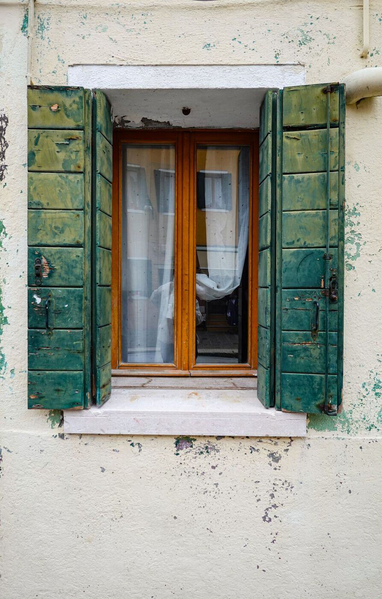
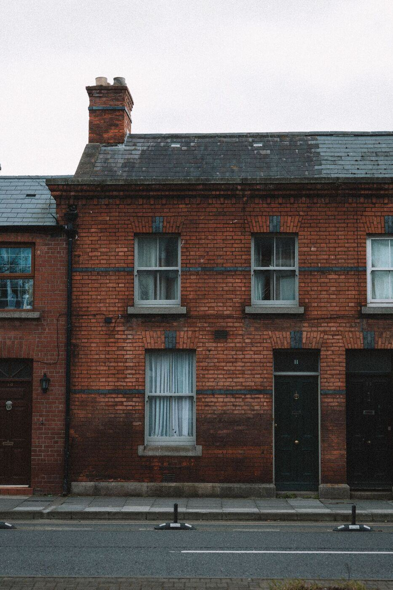
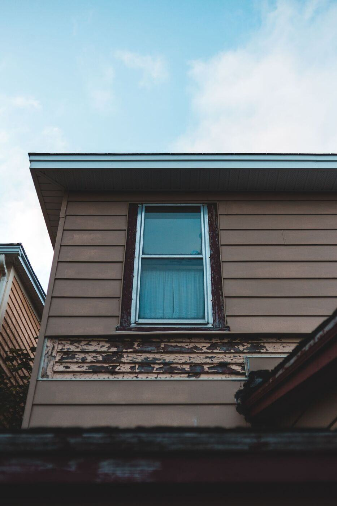

Lead Abatement in Milwaukee, WI
Most of Milwaukee's housing predates the 1978 ban on lead paint, and the city's duplexes, flats and cottages have been repainted for generations. Whether you need testing, a risk assessment or abatement, we point you to the right step.
Request a call
Describe what you are seeing in the house and we will follow up. Prefer to talk? Call (877) 378-5996.
What toxic lead abatement actually covers
Most people searching for lead abatement are really trying to answer a simpler question: what do I do about this paint? A lead paint inspection finds lead paint. A risk assessment finds hazards. Abatement itself, meaning lead paint removal, replacement, enclosure or encapsulation, is the permanent fix, and clearance testing confirms the dust is gone afterward.
Milwaukee adds a local layer. The City of Milwaukee Health Department runs a childhood lead poisoning prevention program, including a Primary Prevention Program for properties, and it says abatement work in the city needs a lead hazard reduction project permit.
Wisconsin also controls who may do this work. The state Department of Health Services requires individual and company certification for lead-based paint work in homes built before 1978, so one firm may not be certified for every step.

What are you dealing with?
Most people do not know which lead service they need. Pick the situation that sounds like yours.
Lead services in Milwaukee
Each page explains what the service is, when it is used and what to ask for.

Lead Paint Testing and Inspection
Find out where lead paint is before a remodel, a home purchase or a change of tenants.
Lead Risk Assessment
Understand hazards from paint, dust and soil, not simply whether old paint exists.

Lead Dust and Soil Hazard Control
Investigate dust after renovation and bare soil near painted exteriors.

Lead Paint Removal and Abatement
Plan permanent hazard control with a written scope, containment and clearance.

Lead Paint Encapsulation and Enclosure
Explore specialized coatings or barriers when the surface is suitable.

Lead-Safe Window and Door Replacement
Address friction dust at old painted sashes, frames and doorways.

Lead Clearance Testing
Get the post-work documentation appropriate to the project and confirm the dust is gone.

Rental Lead Documentation and Planning
Organize a Milwaukee rental project and match the paperwork to what the city asks for.
Cities around Milwaukee we cover
Local pages for 16 Wisconsin cities within a 40-mile radius of Milwaukee, each with notes on its older homes.

Brookfield
Lead paint testing and abatement for Brookfield homes.

Cedarburg
Lead paint testing and abatement for Cedarburg homes.

Cudahy
Lead paint testing and abatement for Cudahy homes.
Glendale
Lead paint testing and abatement for Glendale homes.
Greenfield
Lead paint testing and abatement for Greenfield homes.

Menomonee Falls
Lead paint testing and abatement for Menomonee Falls homes.

Oak Creek
Lead paint testing and abatement for Oak Creek homes.
Racine
Lead paint testing and abatement for Racine homes.
Shorewood
Lead paint testing and abatement for Shorewood homes.
South Milwaukee
Lead paint testing and abatement for South Milwaukee homes.
St. Francis
Lead paint testing and abatement for St. Francis homes.
Waukesha
Lead paint testing and abatement for Waukesha homes.
Wauwatosa
Lead paint testing and abatement for Wauwatosa homes.
West Allis
Lead paint testing and abatement for West Allis homes.
West Milwaukee
Lead paint testing and abatement for West Milwaukee homes.
Whitefish Bay
Lead paint testing and abatement for Whitefish Bay homes.
Guides for figuring it out
Peeling Paint or Window Dust?
You see chipped paint on a porch or a gray film on a windowsill and wonder if it is lead. Here is how to think about it before you scrape, sweep or call anyone.

Abatement or Renovation?
The same window or wall can be part of two very different jobs. Knowing the difference helps you ask for the right thing and read a proposal.
Hiring a Certified Lead Professional
Lead work in a pre-1978 home needs certified people and a certified company. A few questions make it easy to check before you sign anything.
Articles on Milwaukee's older buildings
Neighborhood pieces on planning lead-safe work in Bay View, Riverwest, Washington Heights and the Third Ward.
Bay View: Workers' Cottages and Lead
Bay View's small frame cottages and flats were built for people who worked near the lakeshore industry. After more than a century of repainting, the paint matters.
Riverwest: Flats and Duplexes
Riverwest is dense with older flats and duplexes. When two or more households share a building, lead planning is about units, stairs and shared exteriors.
Washington Heights: Original Windows
Washington Heights has many early twentieth-century homes with the original woodwork. Preserving that look and keeping lead dust down can be done together with some planning.
Historic Third Ward: Adaptive Reuse
The Third Ward's old warehouses have been turned into offices, shops and homes. Older buildings still deserve a lead check before work begins.
Common questions
How do I know if I need lead abatement or just testing?
If you do not yet know whether the paint contains lead, start with testing or inspection. If you already know lead is present and it is chipping or making dust, a risk assessment tells you what to do about it.
Does my Milwaukee house have lead paint?
If it was built before 1978, it might. Much of Milwaukee's housing, including duplexes, flats and cottages, was built well before that. Testing identifies which surfaces carry it.
Is lead abatement different from a renovation?
Yes. Abatement is done to permanently eliminate lead hazards. Lead-safe renovation is remodeling done with practices that limit new lead dust. They have different certifications in Wisconsin.
Who can test for lead in Wisconsin?
The Wisconsin Department of Health Services certifies individuals and companies for lead inspection, risk assessment and abatement work in homes built before 1978.